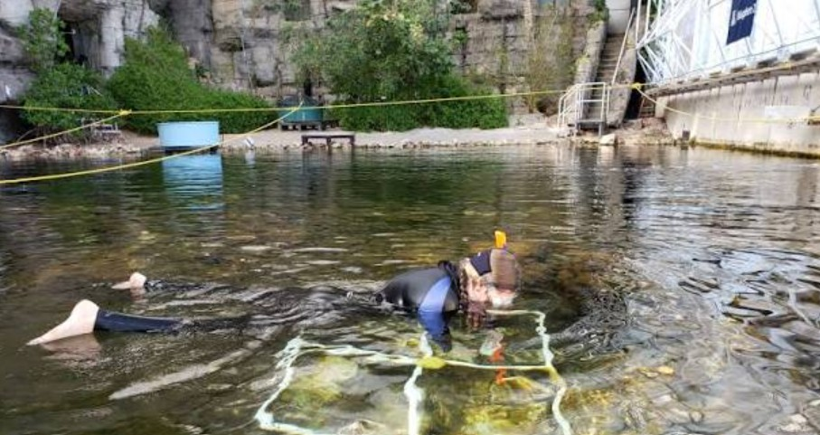
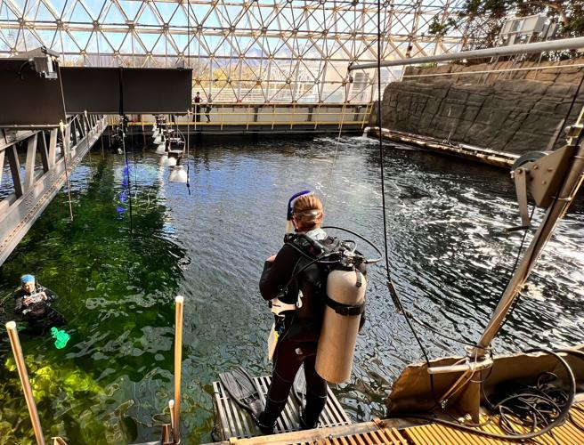
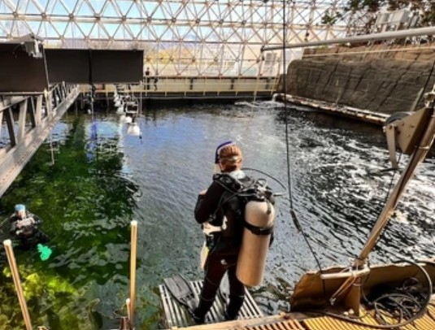

Ocean Reef Lab
The world's largest enclosed marine mesocosm — 2.6 million liters of controlled ocean dedicated to coral reef resilience research and education.
A Complete Ocean Under Glass
The Biosphere 2 Marine Mesocosm is a complete ocean system originally designed to simulate a Caribbean reef. With a surface area of 35 × 20 meters and a volume of 2.6 million liters, it is the world's largest enclosed mesocosm dedicated to innovative research and education on coral reef resilience.
Physical and chemical parameters — temperature, mixing, gas exchange, nutrient concentrations, and partial pressure of CO₂ — can be independently manipulated. This makes the Biosphere 2 Ocean ideal for testing models of chemical or biological change on coral reefs at a scale impossible in standard laboratory aquaria.
Why This Ocean Matters
Coral reefs support 25% of all marine species yet cover less than 1% of the ocean floor. As climate change, ocean acidification, and warming accelerate, reefs face existential threats. The Biosphere 2 Ocean lets researchers isolate and test variables at ecosystem scale — the missing middle between benchtop experiments and the open ocean.
Temperature Control
Precision thermal manipulation to simulate marine heatwaves and chronic warming scenarios on entire reef communities.
Chemistry Manipulation
Independent control of pCO₂, pH, alkalinity, and nutrient concentrations to study ocean acidification in isolation.
Whole-Reef Biology
Approximately 60 fish, hermit crabs, urchins, snails, anemones, and microbial communities live in the system today.
Hydrodynamic Mixing
Engineered wave and flow regimes simulate natural reef hydrodynamics — critical for nutrient delivery and coral health.
Rebuilding a Resilient Reef
We are now revitalizing the Ocean to rebuild a coral reef ecosystem and test innovative solutions for restoring resilient reefs globally. The project pairs new coral stock with controlled-environment stress testing — identifying which genotypes and community configurations survive future ocean conditions.
Living in the system today are about 60 fish, hermit crabs, urchins, snails, anemones, and microorganisms — the foundation of a community being rebuilt species by species.
Inside the Mesocosm



No other facility lets you warm an entire reef, acidify its water, and track every organism's response — from microbes to fish — in a closed, instrumented system. This is the scale at which coral reefs actually live and die.
— Dr. Diane Thompson, Director of Marine ResearchMarine Research Partnerships
The Ocean Reef Lab welcomes collaborations with marine scientists, conservation organizations, and reef restoration programs. Proposals for mesocosm experiments are reviewed through the user facility process.